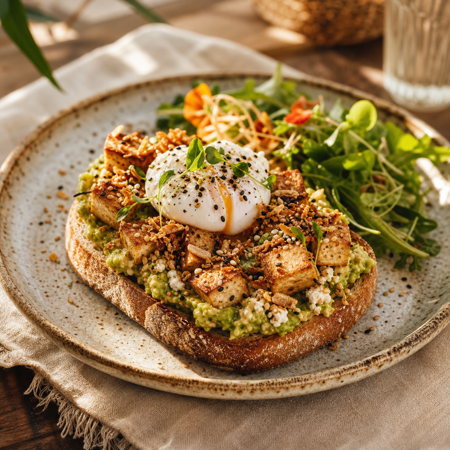
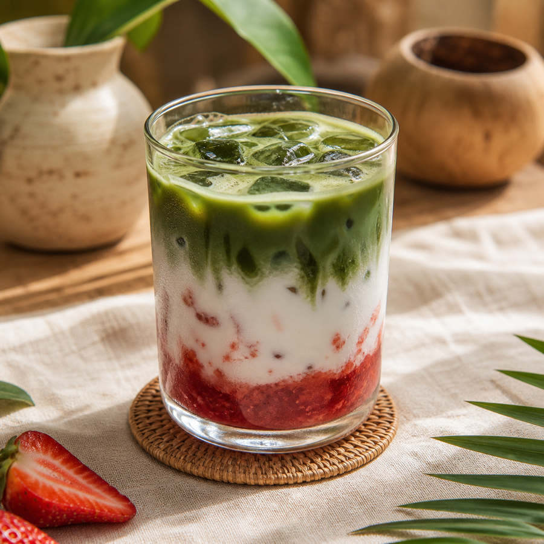
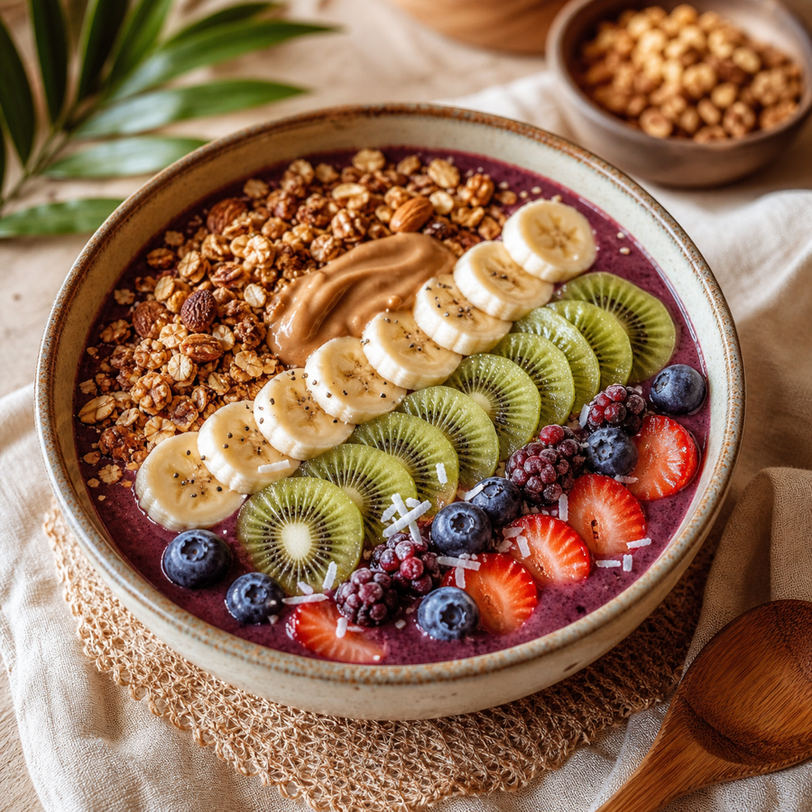
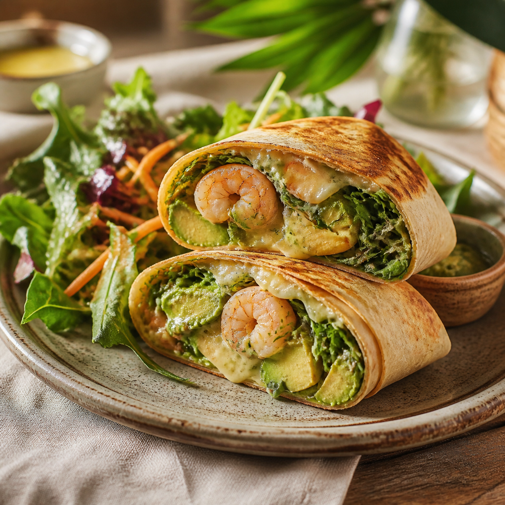
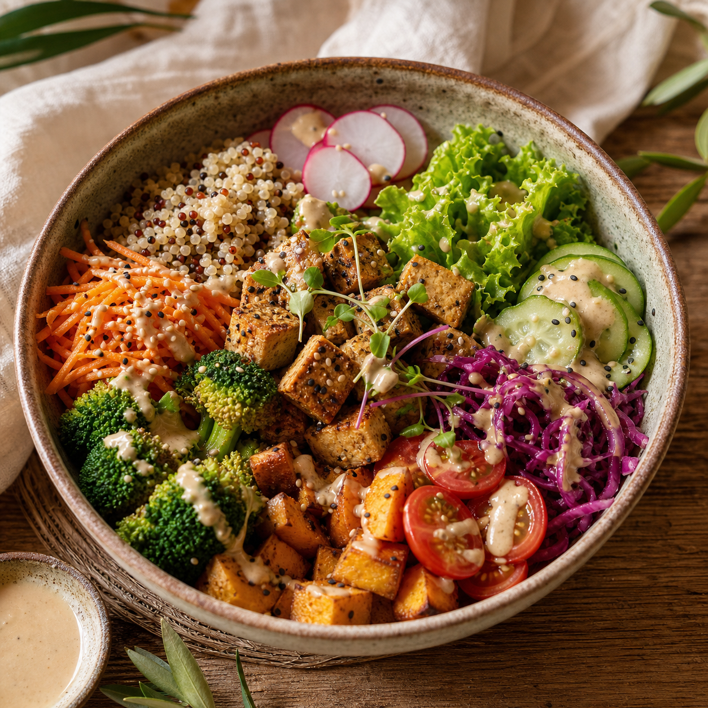
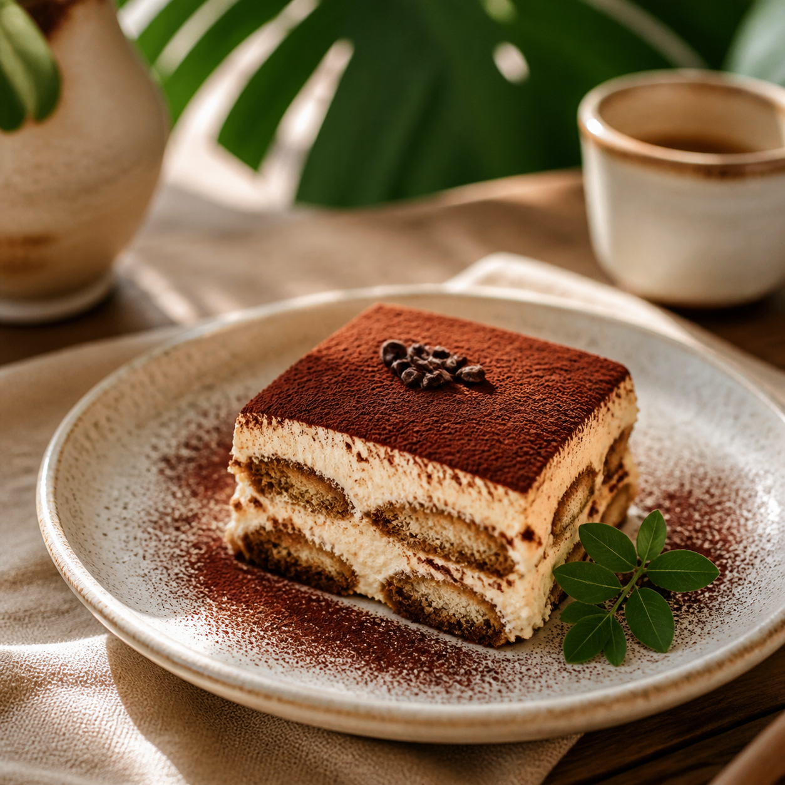

Acai Bowl
260Acai bowl with seasonal fruits, nuts, seeds and granola.

Koh Phangan · Brunch · Coffee · Natural Food
Homemade plates, slow island mornings, coffee, brunch, Thai and Burmese comfort food, and a small craft showroom downstairs.

From the kitchen




About
Atiri is a small beginning of something meaningful. Upstairs is a cafe, brunch, and restaurant space to slow down, enjoy good food, and feel comfortable.
Downstairs, the coffee bar and small showroom connect Atiri to craftsmanship, clothing, natural materials, and simple beauty.
Guest Reviews
I love the place and the service. As a digital nomad, it is an amazing space for work, and the coffee was so good.
An amazing place, clean and cozy. There are upper floors with great seating areas, delicious food, and warm family-oriented service.
Wonderful food and service. The staff is so friendly, and there is anything you need on the menu. We definitely come back to try more.
We loved everything about this cafe. The food is amazing, the ambience is really nice, and the staff is extremely kind. It is a hidden gem.
Found this place almost at random during a walk. Great care was put into the interior design and presentation of the dishes. Relaxed spot, reasonable prices, and kind staff.
Visit